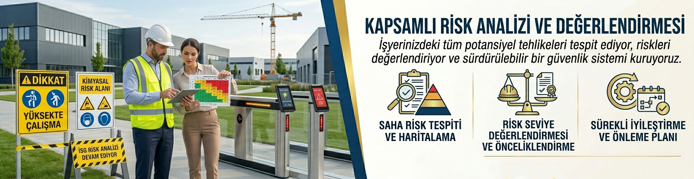

Risk Analizi ve Değerlendirmesi
İşyerinizdeki riskleri tespit edin, önlem alın
Risk değerlendirmesi nedir?
Risk değerlendirmesi iş yerinde var olan ya da dışarıdan gelebilecek tehlikelerin belirlenmesi ve bu tehlikelerin riske dönüşmesine yol açan faktörler ile tehlikelerden kaynaklanan risklerin analiz edilerek derecelendirilmesi ve kontrol tedbirlerin kararlaştırılması amacıyla yapılması gerekli çalışmalar bütünüdür.
6331 sayılı iş sağlığı ve güvenliği kanununa göre işverenler risk değerlendirmesi yaptırmakla yükümlüdür. Bu yükümlülüğü yerine getirmeyen işyerlerine 3361 TL idari para cezası, aykırılığın devamı halinde ise her ay başına 5041 TL para cezası kesilir.
Risk Değerlendirmesinin Geçerlilik Süresi
Yapılmış olan risk değerlendirmesi;
- Az tehlikeli işlerde en geç 6 yılda bir,
- Tehlikeli işlerde en geç 4 yılda bir,
- Çok tehlikeli işlerde en geç 2 yılda bir yenilenmesi gerekmektedir.
Ayrıca işyerinin taşınması, üretim yöntemi değişikliği, iş kazası veya ramak kala olay durumunda risk analizi tamamen veya kısmen değiştirilir.